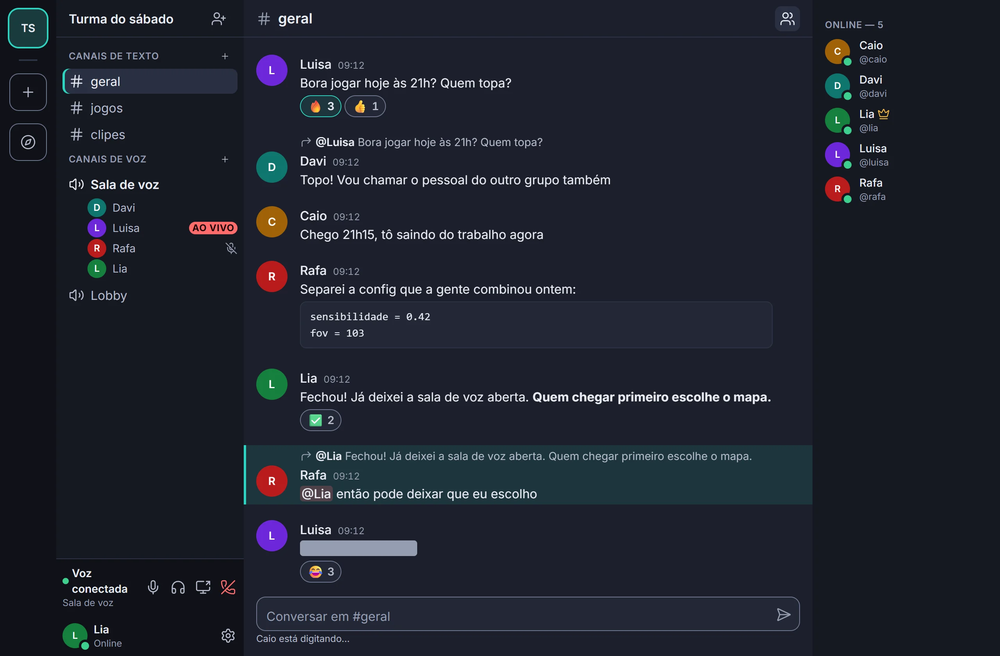

Sua turma, sua voz, seu jogo.
Converse, jogue junto e mostre a tela com o som do jogo. Tudo num lugar só, de graça.
Por enquanto o Aurora existe para Windows e Linux. Abra esta página no computador para baixar.
-
Servidores da turma
Canais de texto e de voz, cargos, permissões por canal e convite por código.
-
Voz e tela para jogar
Voz sem ruído de fundo, apertar para falar até com o jogo na frente e tela em até 1080p a 60 fps com o som junto.
-
Grátis de verdade
Sem plano pago, sem anúncios e sem rastreadores. A qualidade máxima vale para todo mundo.


Mostre o jogo com o som junto.
Mostre a tela inteira ou só a janela do jogo. O som do computador vai junto e as vozes da sala ficam de fora, então ninguém escuta o próprio eco.

Ficou alguma dúvida?
O Windows avisou que o app é desconhecido. E agora?
Esse aviso aparece em programas novos que ainda não têm o certificado de editor da Microsoft. Clique em Mais informações e depois em Executar assim mesmo (em inglês, More info e Run anyway). Ele só aparece na instalação: as atualizações chegam sozinhas.
Meus amigos precisam baixar também?
Sim. Cada um baixa o Aurora por aqui, cria uma conta e entra no seu servidor pelo código de convite que você mandar.
Chame a turma.
Baixe, crie um servidor e mande o código de convite para a galera.
Baixar para Windows